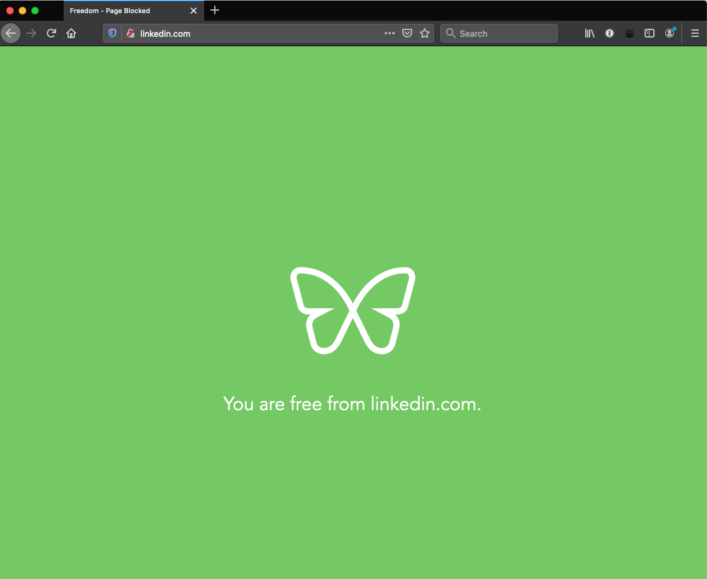
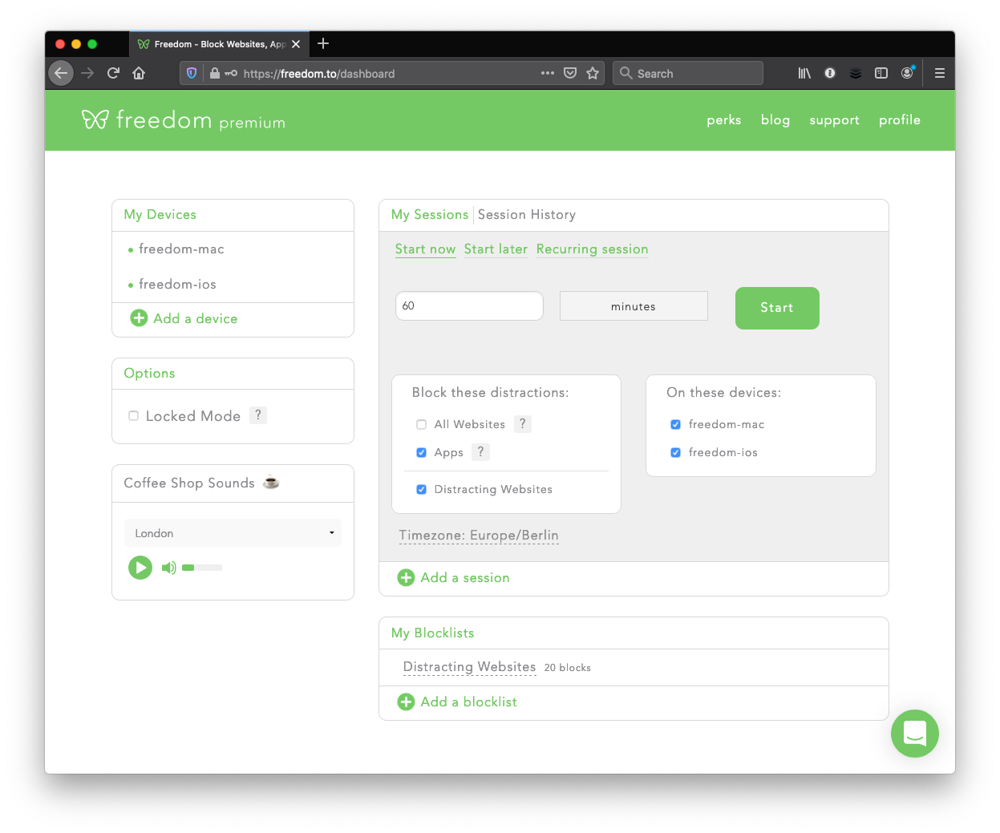
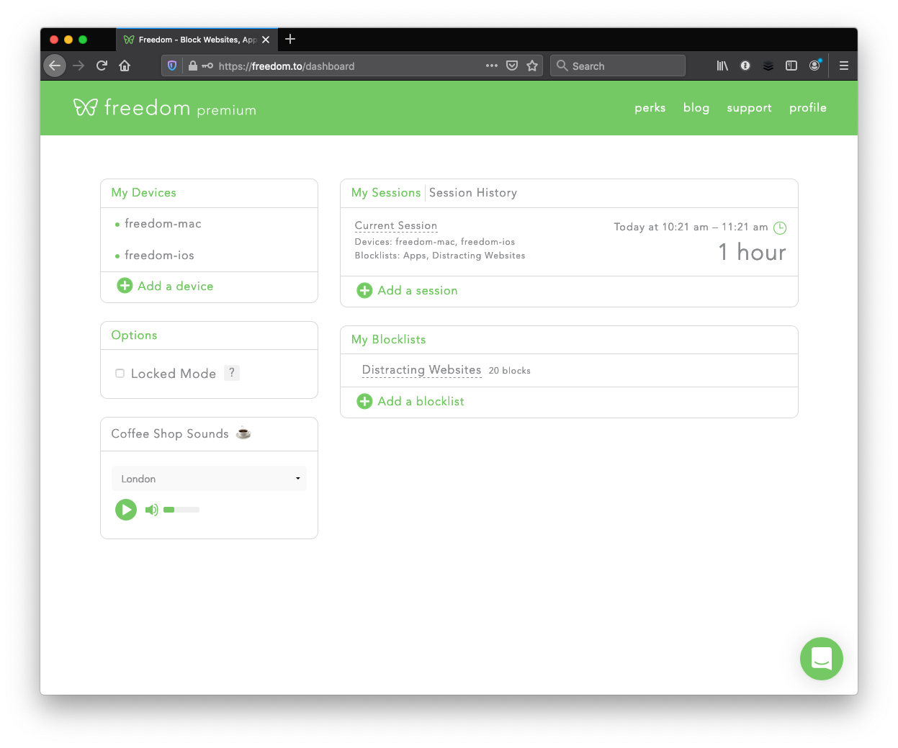

Are you struggling to resist the appeal of social media and news websites when you should be working?
Freedom can help you.
It's an apps and websites blocker.
You can define what you want to block - all or selected apps and websites -
For example, you can decide to block your email client (Outlook), along with social media (eg Linkedin) and news websites, so you can work and still access the rest of the web as needed.
Sessions can be set, and started, from the dashboard in your browser:

or via the menu bar:

You can block categories of websites and/or specific ones:

Sessions can't be interrupted (except by killing the app), and you can even add websites or apps you want to block while a session is running (assuming you're not in Locked Mode):

If you try to launch a blocked app during a session - it won't. It's amazing to realise your habits of launching your email client when you don't need it ("just want to check..).
If you try to access a blocked website, it will display this instead:

Freedom has helped my productivity by ensuring "deep work" sessions are not interrupted by my nasty habits.
Hope it helps you too.